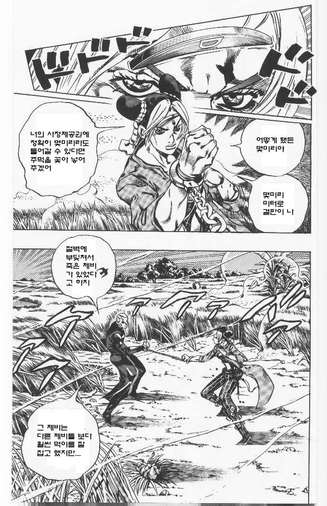
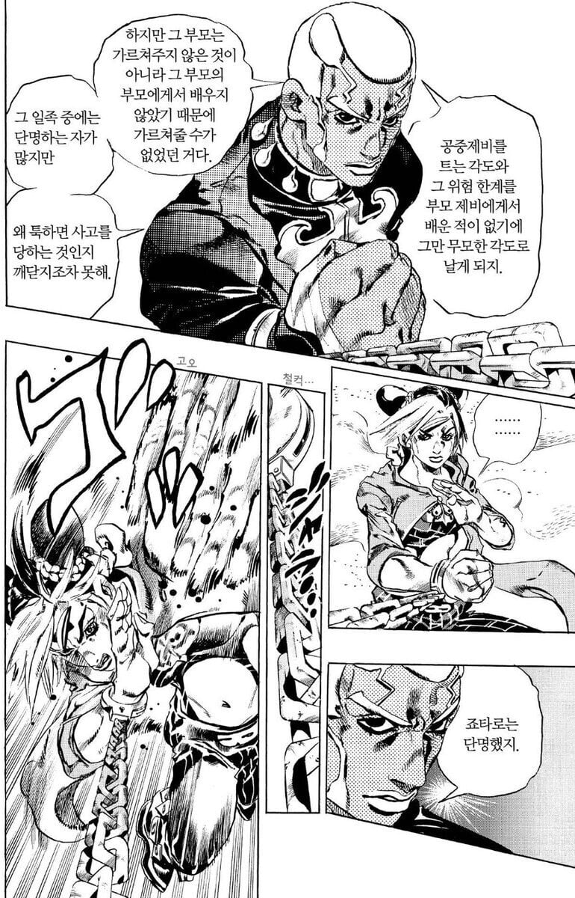

설명
여주인공의 아버지가 저 남자로 인해 혼수상태(남자는 죽인걸로 알고있음)가 된 상태


설명
여주인공의 아버지가 저 남자로 인해 혼수상태(남자는 죽인걸로 알고있음)가 된 상태
하지만 죠셉은 모든것으로부터 예외라서 남들은 마누라도 하나 둘까말까 할동안 2명 둠
무슨 소리냐
최초의 결혼반지를 준 와무우와 에시디시까지 합치면 넷인것을
죠셉이 제일 오래 살았네
운 몰빵 캐릭터라 2부 캐릭터가 꼬부랑 할배 되는 나이로 4부까지 살아남음 ㅋㅋ
죠지 1세, 조나단, 죠지 2세 합친것보다 오래 살았을듯
갑자기 또 죠죠 특유의 이상한 잡학 꺼내나 했더니 단 한마디 추가해서 패드립으로 이어버리는 역시 배운놈은 드립도 달라 싶은 장면
지식이란 결국 누군가가 만들어낸 것
배우지 않아도 잊혀지더라도 결국에는 누군가가 다시 만들어낸다
같은 멋드러진 말들로 받아치기에는 너무 심한 패드립이었다
저희 모친께서는 개를 한마리 키우십니다
진짜 저주받은 일족 한명빼고 다 단명했네